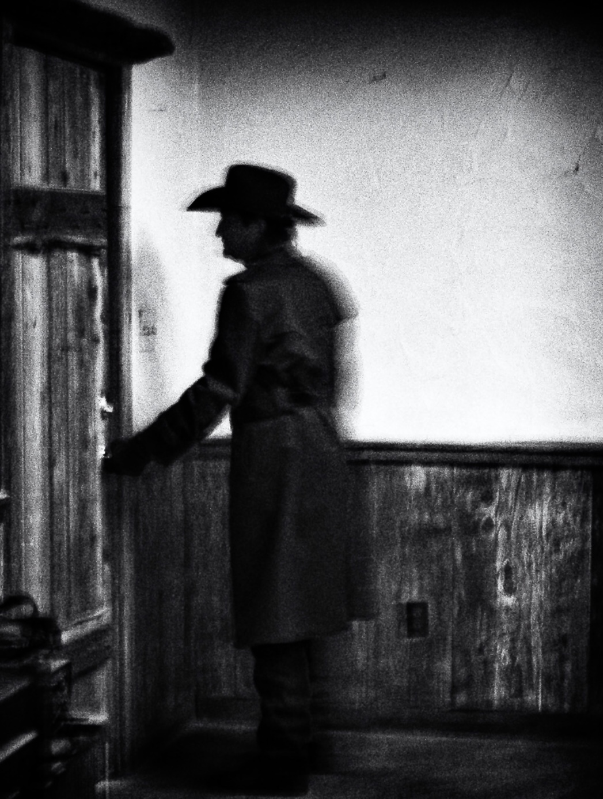

Informações Iniciais
Localidade: Th3 Sh4dy Gr3y, subnível 1One;
Comportamento: Extremamente hostil;
Combate: Extremamente não-recomendado, porém possível.

The Landlord
The Landlord é uma entidade única e extremamente perigosa do subnível 1One do Th3 Sh4dy Gr3y.
A entidade utiliza um chapéu fedora, um terno e sempre anda com uma maleta.
Ao avistar um andarilho, irá começar a perseguí-lo lentamente, dizendo que o mesmo está invadindo sua propriedade. Caso o andarilho tente correr, todas as portas da mansão serão trancadas.
Links
Wikidot, na sessão "Level 1One" (em inglês)
Wikidot, na sessão "Nível 1Um" (em português)
Wikifandom, na sessão "Nível 1Um" (em português)